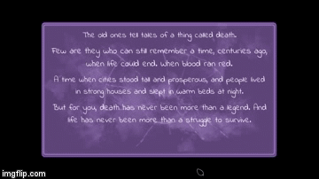
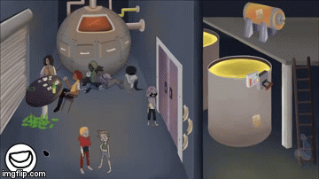

Tools Used: Unity, C#, Audiokinetic library for Wwise implementation
Deathless was a a year long project directed by lead engineer Sienna Cornish that I had joined for the September 2017 ~ December 2017 duration. Deathless is a point-and-click game that deals with the social stratification between the "elites" and the commoners, where the elites consume the energies of the commoners to keep themselves powerful. In this game, no person can truly die but simply have its physical body disintegrated, with its ghost being left behind to their miseries. The protagonist of the story tries to escape their fate from becoming devoured by the elites, and in the process discovers a unique ability that frightens their peers. Will the protagonist survive this ordeal only to look for true death?
In this project, I worked as one of the programmers of the team, primarily working as an audio engineer to implement in-game sound effects and music created by the audio producers. I created the Audio Manager scripts, programmed functions to play sound events in-game at appropriate triggers.
I also created a more versatile inspector editor for world items to better organize inanimate and animate items, interactable and noninteractable items. In addition, I produced the animations for the inventory items, where anytime the player picks up an object, the inventory will notify the player that the following item had been placed inside the in-game bag.
We have tentatively finished the first chapter of this project, and Deathless is still under development before full publication.
